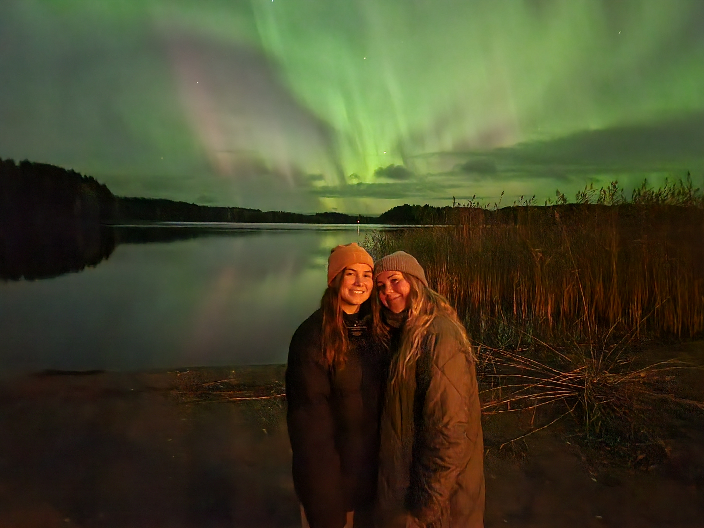

1. Finland
I served my mission in finland, so it will always be a special place in my heart.

My other Favorite Destinations
- Europe
- Copenhagen, Denmark (Shopping)
- Tallinn, Estonia (History and Culture)
- North America
- Costa Rica (Nature)
- Bahamas (Beaches)